[강의정리] 데이터통신과네트워크 Overview(2)
네트워크 계층 구조
네트워크 계층 구조: 네트워크 계층
네트워크 계층 프로토콜: ARP (Address Resolution Protocol)
- 데이터를 전달하려는 IP 주소와 통신에 필요한 물리적인 주소(MAC)를 알아내는 프로토콜
- 선택된 매체에 브로드캐스트를 통해 특정 IP 주소를 사용하는 호스트가 응답을 하도록 요구하는 방식을 사용
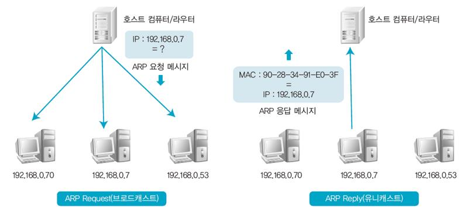
네트워크 계층 프로토콜: IP (Internet Protocol)
- 가장 대표적인 네트워크 계층의 프로토콜
- 하위 계층의 서비스를 이용하여 두 노드 간의 데이터 전송 경로를 확립해주는 역할 (단말장치 간 패킨 전송 서비스)
IP (Internet Protocol)주소 체계
- 32자리 2진수로, 8자리마다 점을 찍어 구분
- A, B, C, D, E 클래스로 구분하는데 각 클래스는 네트워크 부분과 호스트 부분으로 구성
- A, B, C 클래스는 맨 앞부분에 시작하는 2진수 숫자에 따라 구분
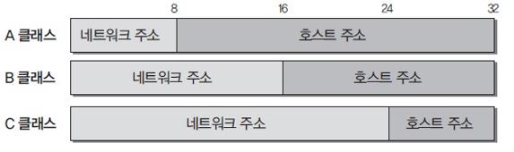
IP (Internet Protocol)주소 분류
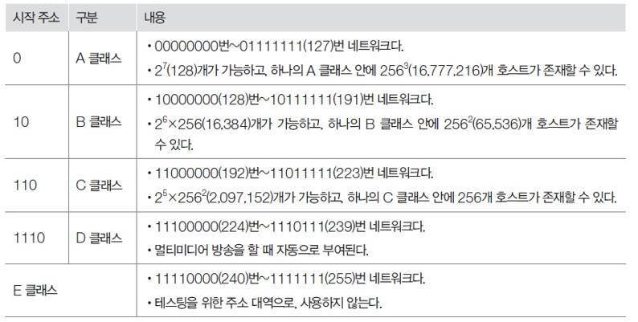
- 사설 네트워크: 사설 네트워크는 공인 네트워크 주소 부족 현상을 해결하기 위해 많이 사용
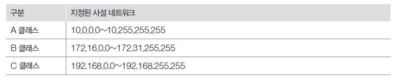
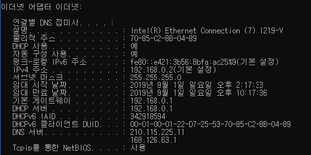
네트워크 계층 프로토콜: ICMP (Internet Control Message Protocol)
- 호스트 서버와 인터넷 게이트웨이 사이에서 메시지를 제어 및 오류를 알려주는 프로토콜
- 대표적인 툴은 ping
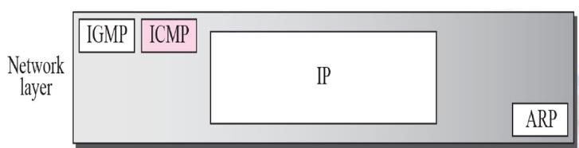
ICMP Echo Request 메시지
- 송신측의 전송 패킷이 목적이 노드나 라우터에 도착했는지를 확인하는 데 사용
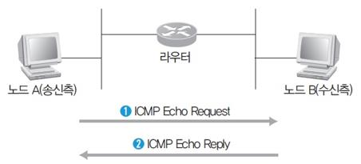
네트워크 계층 프로토콜: IGMP (Internet Group Management Protocol)
- 멀티캐스트에 관여하는 프로토콜로 멀티캐스트 그룹을 관리하는 역할
- 유니캐스트(Unicast) - 일반적, 브로드캐스트(Broadcast), 멀티캐스트(Multicast) - 중간 / 효율높음
- IP 멀티캐스트 주소는 D 클래스 주소 대역(244.0.0.1 ~ 239.255.255.255)으로 규정
네트워크 계층 관련 장비: 라우터
- 네트워크의 대표적인 장비, 게이트웨이라고도 함
- 논리적으로 분리된 둘 이상의 네트워크를 연결
- 로컬 네트워크에서 브로드캐스트를 차단하여 네트워크를 분리
- 패킷이 목적지까지 가장 빠르게 보내는 길잡이 역할
정적 라우팅
- 관리자 권환으로 특정 경로를 통해서만 패킷이 지날 수 있도록 설정
- 네트워크 변경사항이 발생하면 라우팅 테이블을 수동으로 직접 고쳐야 함
- 보안이 중요한 경우 선호
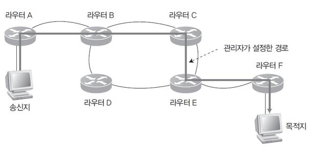
동적 라우팅
- 라우터가 네트워크 연결 상태를 스스로 파악하여 최적의 경로를 선택해 전송
- 네트워크 연결 형태가 변경되어도 자동으로 문제를 해결
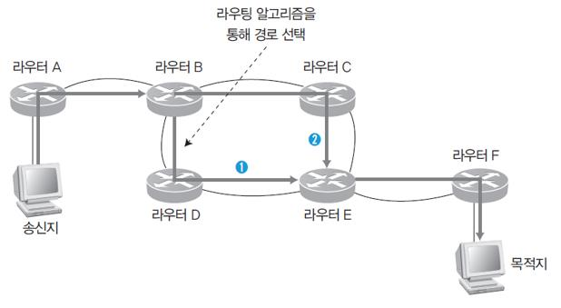
네트워크 계층 구조: 전송 계층
4계층: 전송 계층(Transport Layer)
- 프로토콜(TCP, UDP)과 관련된 계층으로 오류 복구와 흐름 제어 등을 담당, 두 시스템 간에 신뢰성 있는 데이터를 전송
- 네트워크 계층에서 온 데이터를 세션 계층의 어느 어플리케이션에 보낼 것인지 판독, 전송할 경로(Port, 포트)를 선택
- 네트워크 계층에서 전송한 데이터와 실제 운영체제의 프로그램이 연결되는 통신 경로라고 할 수 있음
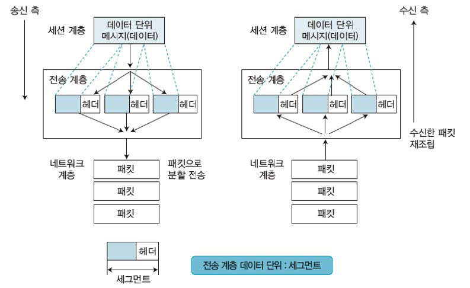
- 대표 프로토콜은 TCP(Transmission Control Protocol)
- TCP가 가진 주소를 포트(Port)라 하며 0~65532(216-1)번까지 존재
- -~1023번(1,024)d을 잘 알려진 포트(Well Known Port)라고 부름 (보통 0번 포트는 사용하지 않음)
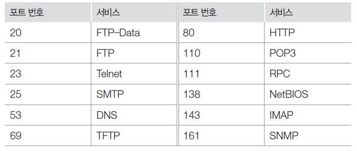
포트 주소
- 수신지 컴퓨터까지 전송하려면 IP 주소와 물리 주소의 포트주소도 필요함!
- 인터넷 통신의 최종 목적은 한 프로세스가 다른 프로세스와 통신할 수 있도록 하는 것
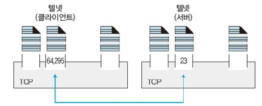
- 즉 포트는 Tcp가 상위 계층으로 데이터를 전달하거나 상위 계층에서 TCP로 데이터를 전달할 때 상호 간에 사용하는 데이터의 이동 통로를 말함
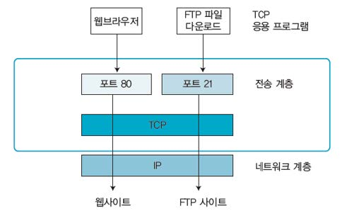
전송 계층 프로토콜: TCP(Transmission Control Protocol)
- 연결 지항형 프로토콜
- IP와 함께 통신을 하는 데 반드시 필요한 가장 기본적인 프로토콜
TCP의 특징
- 높은 신뢰성
- 가상 회선 연결 방식
- 연결의 설정과 해제
- 데이터 체크섬
- 시간 초과와 재전송
- 데이터 흐름 제어
연결 설정 과정(Three-Way Handshaking)

연결 해제 과정

전송 계층 프로토콜: UDP(User Datagram Protocol)
- 비연결 지향형 프로토콜
- 상대방이 보낸 응답을 확인하지 않아 네트워크에 부하를 주지 않음
- 데이터 자체의 신뢰성이 없어 수신한 데이터의 무결성을 보장받지 못함
UDP의 특징
- 비연결 지향형
- 네트워크 부하 감소
- 비신뢰성
- 전송된 데이터의 일부가 손실됨
네트워크 계층 구조: 세션 계층
5계층: 세션 계층(Session Layer)
- 응용 프로그램 계층 사이의 접속을 설정 · 유지 · 종료시켜주는 역할
- 통신장치간의 설정을 유지하고 동기화 하는 역할
네트워크 계층 구조: 표현 계층
6계층: 표현 계층(Presentation Layer)
- 데이터 표현 차이를 해결하려고 서로 다른 형식으로 변환하거나 공통 형식을 제공하는 계층
네트워크 계층 구조: 응용 계층
7계층: 응용 계층(Application Layer)
- 여러가지 프로토콜에 대하여 사용자인터페이스를 제공
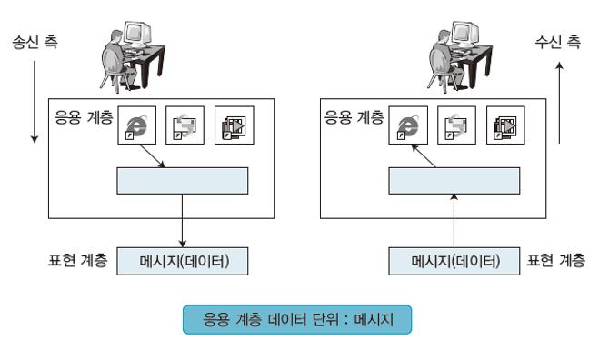
응용 계층(Application Layer) 관련 프로토콜들
FTP(File Transfer Protocol, 20,21)
- 파일 전송을 위한 가장 기본적인 프로토콜
- 1972 년 텔넷과 함께 표준으로 제정
- 클라이언트와 서버가 대화형으로 통신 가능
Telnet(텔넷, 23)
- 사용자가 원격에 있는 서버에 로그인하도록 TCP 연결을 설정
- 단말기가 원격 컴퓨터 바로 옆에 있는 것처럼 직접 조작할 수 있게 해줌
POP3 & IMAP
- POP3(110) : 메일 서버로 전송된 메일을 확인할 때 사용하는 프로토콜
- IMAP(143) : POP3 와 기본적으로 같으나 , 메일을 읽은 후 메일이 서버에 남음
SMTP(Simple Mail Transfer Protocol, 25)
- 메일 서비스
DNS(Domain Name System, 53)
- 도메인 이름 주소를 통해 IP 주소를 확인할 수 있는 프로토콜
TFTP(Trivial File Transfer Protocol, 69)
- 파일을 전송하는 프로토콜
- UDP 패킷을 사용하고 , 인증 기능을 제공하지 않음
HTTP( HyperText Transfer Protocol, 80)
- 인터넷을 위해 사용하는 가장 기본적인 프로토콜
네트워크 장비
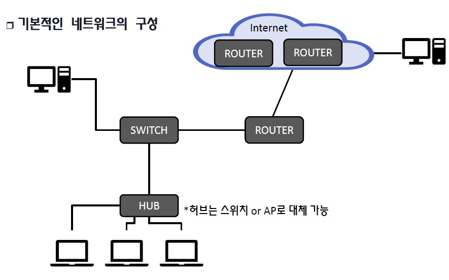
네트워크 장비: 스위치 종류
- L2 스위치: MAC 정보 기반 네트워크 통신 지원
- L3 스위치: IP 정보 기반 네트워크 통신 지원
- L4 스위치: IP 정보 + 포트정보 기반 네트워크 통신 지원
- L7 스위치: Application Data 기반 네트워크 통신 지원
기본적인 네트워크의 구성
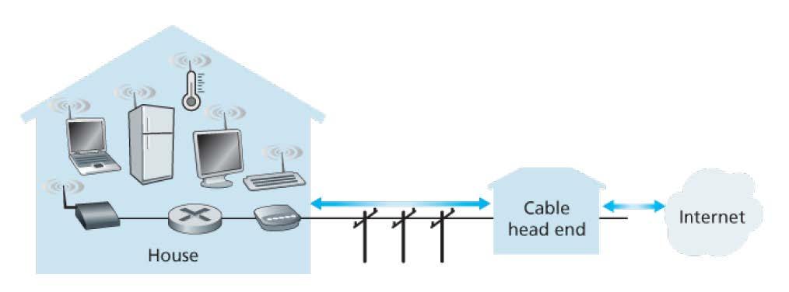